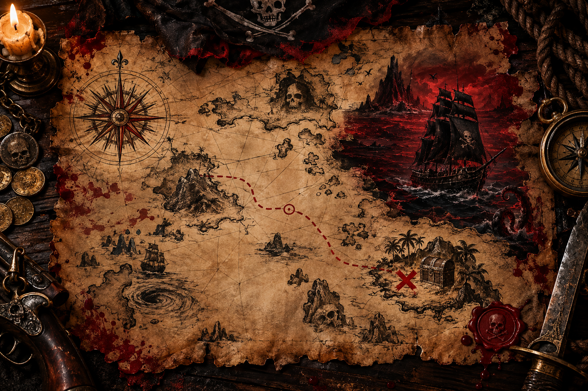

🏴☠️
DRESSCODE
PÄRIS MERERÖÖVEL. Ei mingeid odavaid plastmõõku ega poolikut kostüümi. Tee endale tegelane.
Üks öö. Üks laev. Üks legend.
Fake piraadid pole lubatud.
See ei ole tavaline sünnipäevakutse.
Kui meri on must ja kuu ripub madalal, koguneb Pärnumaal üks jõuk. Nad ei otsi vabandusi. Nad otsivad seiklust, rummi ja head meeskonda.
Kell 19:00 tõstetakse ankur. Hilinejad jäävad kaldale. Kui tuled, siis tule nagu päris mereröövel.
Fake piraadid pole lubatud. Mõõk, mantel, pearätt, saapad, kuld — näita, et kuulud meeskonda.
Kapteni korraldused on lihtsad.
PÄRIS MERERÖÖVEL. Ei mingeid odavaid plastmõõku ega poolikut kostüümi. Tee endale tegelane.
Laeva kütust jagub kõigile. Õhtu on pikk ja meri ei maga.
Õhtul võtab DJ teki üle. Tantsupõrand hakkab liikuma.
Võta ujukad — kunagi ei tea, kelle peame üle parda viskama.
Kui meri liiga külmaks läheb, saab saunas uuesti kuumaks kütta.
Kiirematel on võimalik majutust saada. Küsi kaptenilt otse.
Jälgi rada kapteni sadamani.

Siimu tee 23
Laadi küla, Pärnumaa
Kaart on visuaalne aardekaart; päris sõidujuhiste jaoks ava Google Maps.
AVA GOOGLE MAPSKapten vajab meeskonna nimekirja.